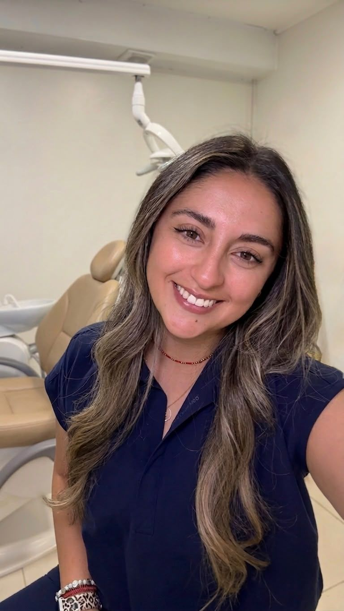
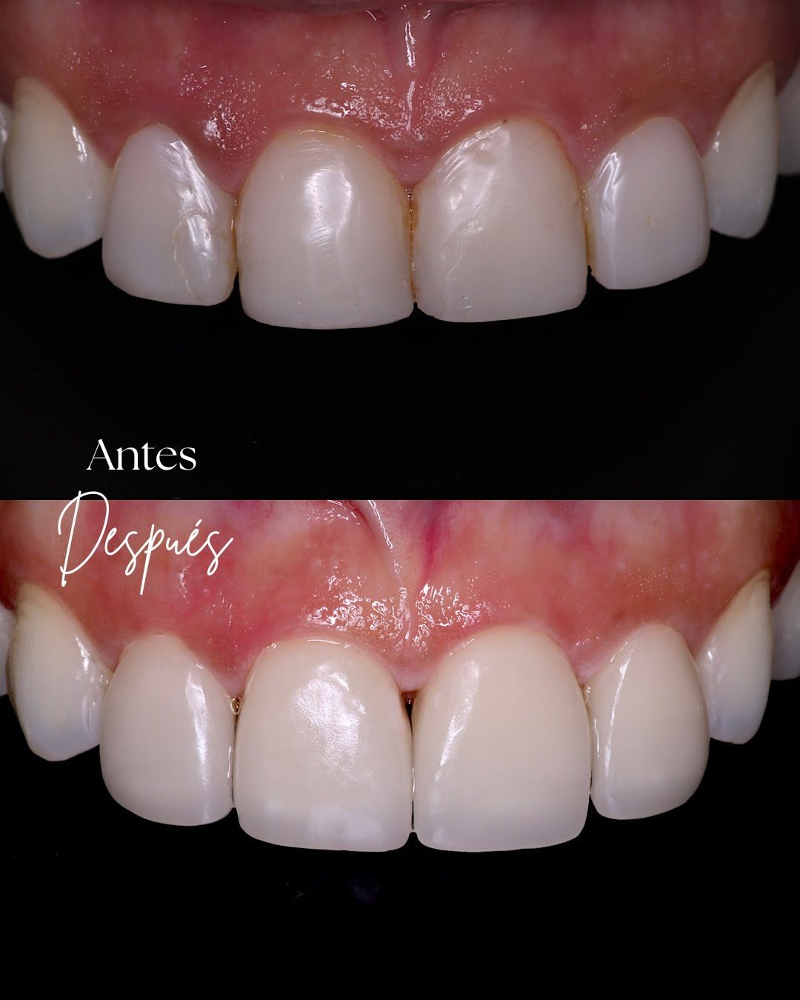
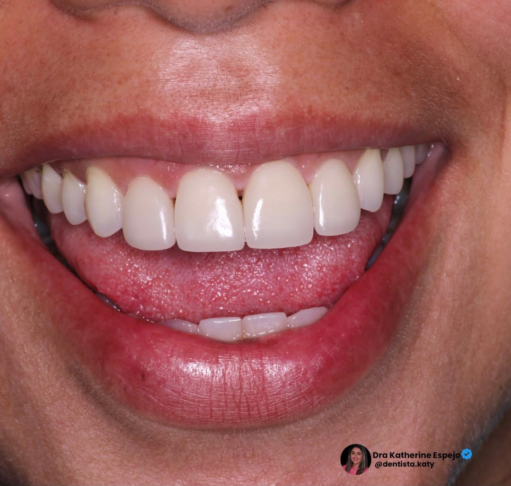
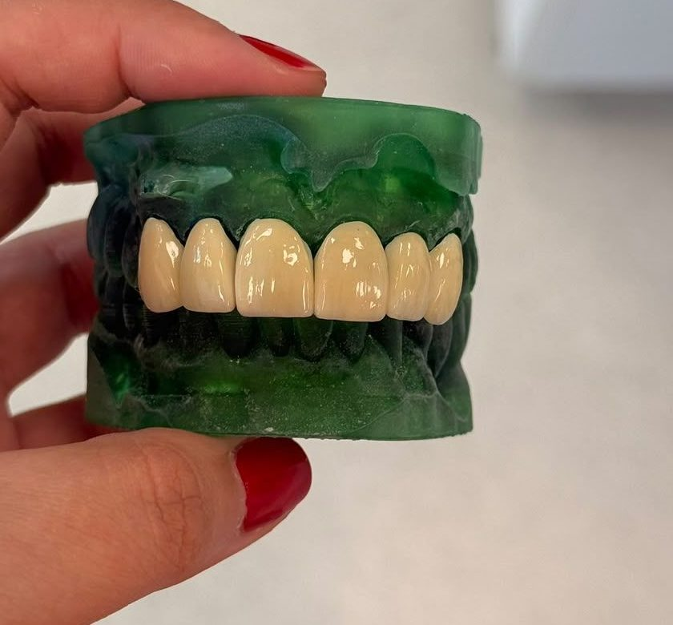
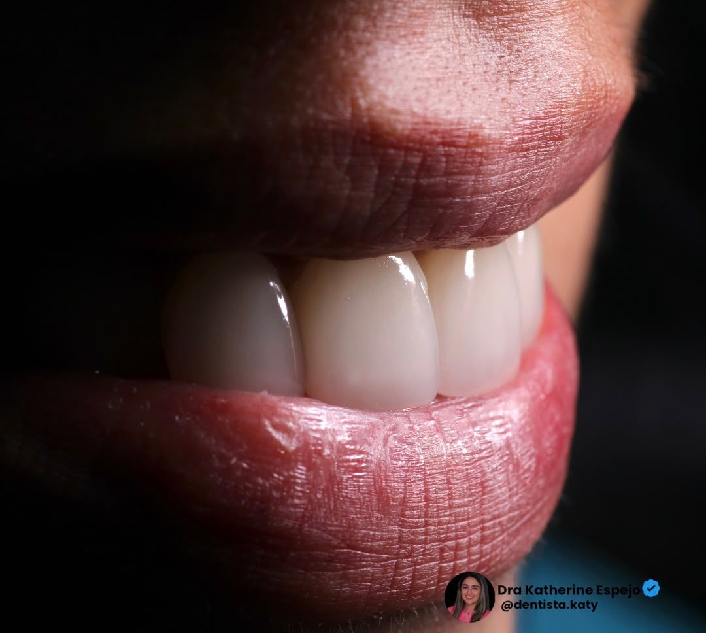
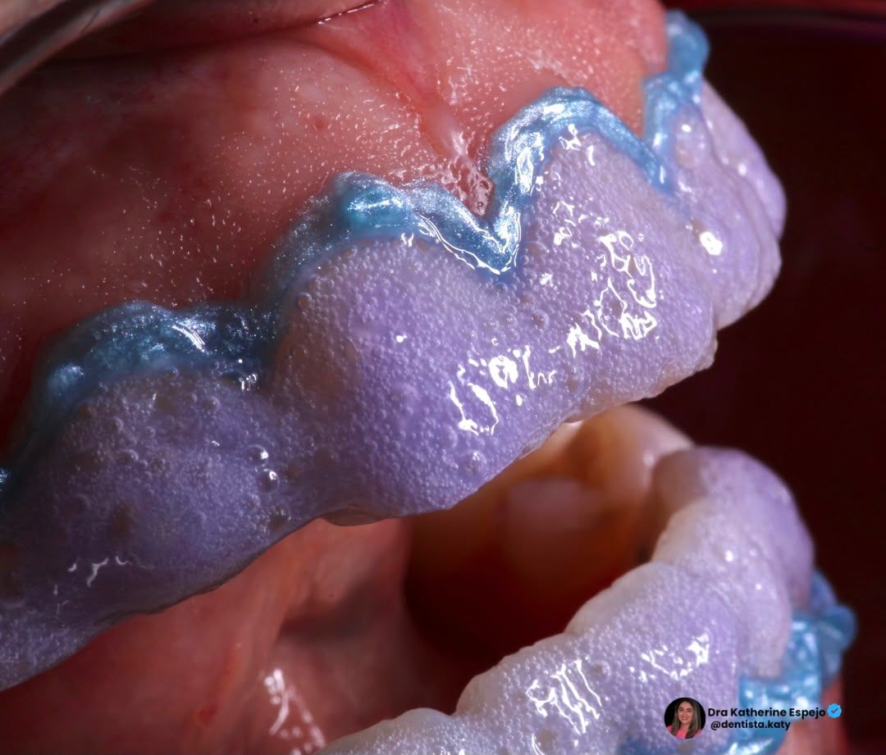

Te ayudo a recuperar la confianza al sonreír.
Soy Katherine Espejo, cirujana dentista y especialista en rehabilitación oral. Atiendo en Puerto Montt, desde un blanqueamiento hasta los casos que necesitan reconstruir la sonrisa entera.
- +900sonrisas transformadas
- Especialistaen Rehabilitación Oral
- Puerto Monttatención particular

Creo en una odontología real, pensada para cada persona y no para la foto.
-
Resultados naturales
Busco que tu sonrisa calce con tu cara y se vea como tuya, sin exagerar.
-
Valor claro desde el inicio
Antes de empezar sabes qué vamos a hacer y cuánto va a costar.
-
Sin presión
Te doy el tiempo que necesites para decidir. Puedes preguntar todo lo que quieras.
Aprendí en el extremo sur lo que de verdad necesita un paciente.
Empecé haciendo voluntariados y después viví y trabajé en Hornopirén. Ahí entendí que cada persona llega con una historia distinta, y que la odontología tiene que adaptarse a ella y no al revés.
Por eso me especialicé en Rehabilitación Oral. Hoy puedo hacer un blanqueamiento o unas carillas, pero también tomar los casos difíciles que otros prefieren no tocar. Y cuando se puede, siempre intento salvar tus dientes naturales.
- Cirujana Dentista
- Universidad del Desarrollo, 2020
- Especialista en Rehabilitación Oral
- Universidad Autónoma de Chile, 2026
- Registro
- N.º 677366

Tratamientos y valores
Te muestro los valores de referencia para que llegues sabiendo el rango. El precio final lo conversamos en la evaluación, siempre antes de empezar.
Estética dental y facial
- desde $100.000
Blanqueamiento dental
En la consulta o en tu casa, con cubetas hechas a tu medida.
- desde $80.000
Carillas de resina
Mejoran forma, color y pequeños espacios en pocas sesiones.
- desde $320.000
Carillas cerámicas
Más resistentes, con un color que se mantiene estable por años.
- desde $80.000
Diseño de sonrisa
Planificamos tu sonrisa completa antes de tocar un solo diente.
- desde $180.000
Botox
En la zona de la boca y la cara, siempre después de evaluarte.
Rehabilitación oral
- según evaluación
Rehabilitaciones complejas
Dientes perdidos, desgastados o trabajos antiguos que hay que rehacer.
- desde $60.000
Rehabilitación biomimética
Para salvar dientes muy dañados, conservando todo el diente natural posible.
- desde $200.000
Incrustaciones
Restauraciones a medida para dientes con un daño grande.
- desde $300.000
Prótesis
Fijas o removibles, hechas a tu medida.
¿Tu caso es complejo o ya te dijeron que no tenía solución? Escríbeme y lo revisamos en la evaluación.
Consultar por WhatsAppCasos reales de la consulta
Cada caso se publica con la autorización escrita del paciente.

CarillasAntes y después. Corregimos el desgaste y las manchas.
 Rehabilitación
RehabilitaciónAntes y después de una rehabilitación oral completa.

Diseño de sonrisaEl resultado: una sonrisa en armonía con la cara.

Diseño de sonrisaPrimero lo planificamos en un modelo de tu boca.

CarillasBrillo y forma natural.

BlanqueamientoEn la consulta, con una barrera que protege tus encías.
Así es tu primera visita
Conversamos
Me cuentas qué te gustaría cambiar de tu sonrisa y qué tratamientos te has hecho antes.
Revisamos
Examino tu boca completa, con dientes, encías y mordida, más allá de lo que se ve a simple vista.
Te explico
Te muestro las opciones en palabras simples, con lo que es posible y el valor de cada una.
Tú decides
Puedes empezar, pensarlo con calma o volver con más preguntas cuando quieras.
También enseño en Instagram
@dentista.katy


Preguntas frecuentes
¿El blanqueamiento daña los dientes?
No, cuando se hace después de evaluarte y con productos adecuados. Puede aparecer algo de sensibilidad pasajera, y la controlamos ajustando el tratamiento.
¿Carillas de resina o cerámicas: cuál me conviene?
La resina es más económica y se hace en menos tiempo. La cerámica es más resistente y conserva mejor el color con los años. En la evaluación vemos cuál se ajusta a tu caso y a tu presupuesto.
¿Qué es un diseño de sonrisa?
Es planificar tu sonrisa completa, con la forma, el tamaño y el color de los dientes, en armonía con tu cara y antes de hacer cualquier tratamiento.
¿Por qué una dentista aplica botox?
Porque la boca y la cara son parte de nuestro trabajo. Siempre lo aplico después de una evaluación.
¿Puedo usar mi Isapre?
Sí, por reembolso. Te entrego la boleta y el detalle de prestaciones para que lo solicites. No atiendo por Fonasa.
Agenda tu evaluación.
Todavía no tengo agenda en línea, así que escríbeme directo por el canal que te acomode.